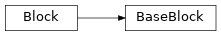

cxflow_tensorflow.models.blocks¶get_block_instance():
Try to create a block instance from the given code and an iterable of block candidates.cxflow_tensorflow.models.blocks.get_block_instance(code, blocks, block_kwargs=None)[source]¶Try to create a block instance from the given code and an iterable of block candidates.
| Parameters: | |
|---|---|
| Raises: | UnrecognizedCodeError – if none of the block candidates can parse the given code |
| Return type: | |
| Returns: | a tuple of (block instance, block type) |
cxflow_tensorflow.models.blocks.Block(code, **kwargs)[source]¶Bases: object
Base cxflow-tensorflow block concept.
A block shall be configurable from a single string (code) and provide apply() method
which takes and returns a single tensor.
__init__(code, **kwargs)[source]¶Create new Block from the given code.
| Parameters: | code (str) – short human-readable code for block parametrization |
|---|
cxflow_tensorflow.models.blocks.BaseBlock(code, regexp, defaults=None, **kwargs)[source]¶Bases: cxflow_tensorflow.models.blocks.Block
Base cxflow-tensorflow block.
__init__(code, regexp, defaults=None, **kwargs)[source]¶Try to parse and create new BaseBlock using the following procedure:
regexp to the given code (raise UnrecognizedCodeError if it fails)_handle_parsed_args() method (must be overridden)| Parameters: | |
|---|---|
| Raises: | UnrecognizedCodeError – if the given |
UnrecognizedCodeError:
Inappropriate argument value (of correct type).